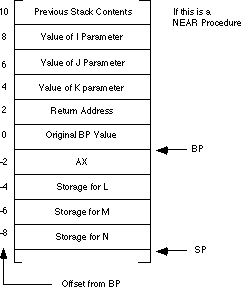

|
Table of Content | Chapter Eleven (Part 8) |
|
Table of Content | Chapter Eleven (Part 8) |
| CHAPTER ELEVEN: PROCEDURES AND FUNCTIONS (Part 7) |
| 11.8 -
Local Variable Storage 11.9 - Recursion |
| 11.8 Local Variable Storage |
Sometimes a procedure will require temporary storage, that it no longer requires when the procedure returns. You can easily allocate such local variable storage on the stack.
The 80x86 supports local variable storage with the same
mechanism it uses for parameters - it uses the bp and sp
registers to access and allocate such variables. Consider the following Pascal program:
program LocalStorage;
var i,j,k:integer;
c: array [0..20000] of integer;
procedure Proc1;
var a:array [0..30000] of integer;
i:integer;
begin
{Code that manipulates a and i}
end;
procedure Proc2;
var b:array [0..20000] of integer;
i:integer;
begin
{Code that manipulates b and i}
end;
begin
{main program that manipulates i,j,k, and c}
end.
Pascal normally allocates global variables in the data
segment and local variables in the stack segment. Therefore, the program above allocates
50,002 words of local storage (30,001 words in Proc1 and 20,001 words in Proc2).
This is above and beyond the other data on the stack (like return addresses). Since 50,002
words of storage consumes 100,004 bytes of storage you have a small problem - the 80x86
CPUs in real mode limit the stack segment to 65,536 bytes. Pascal avoids this problem by
dynamically allocating local storage upon entering a procedure and deallocating local
storage upon return. Unless Proc1 and Proc2 are both active
(which can only occur if Proc1 calls Proc2 or vice versa), there
is sufficient storage for this program. You don't need the 30,001 words for Proc1
and the 20,001 words for Proc2 at the same time. So Proc1
allocates and uses 60,002 bytes of storage, then deallocates this storage and returns
(freeing up the 60,002 bytes). Next, Proc2 allocates 40,002 bytes of storage,
uses them, deallocates them, and returns to its caller. Note that Proc1 and Proc2
share many of the same memory locations. However, they do so at different times. As long
as these variables are temporaries whose values you needn't save from one invocation of
the procedure to another, this form of local storage allocation works great.
The following comparison between a Pascal procedure and its corresponding assembly language code will give you a good idea of how to allocate local storage on the stack:
procedure LocalStuff(i,j,k:integer);
var l,m,n:integer; {local variables}
begin
l := i+2;
j := l*k+j;
n := j-l;
m := l+j+n;
end;
Calling sequence:
LocalStuff(1,2,3);
Assembly language code:
LStuff_i equ 8[bp]
LStuff_j equ 6[bp]
LStuff_k equ 4[bp]
LStuff_l equ -4[bp]
LStuff_m equ -6[bp]
LStuff_n equ -8[bp]
LocalStuff proc near
push bp
mov bp, sp
push ax
sub sp, 6 ;Allocate local variables.
L0: mov ax, LStuff_i
add ax, 2
mov LStuff_l, ax
mov ax, LStuff_l
mul LStuff_k
add ax, LStuff_j
mov LStuff_j, ax
sub ax, LStuff_l ;AX already contains j
mov LStuff_n, ax
add ax, LStuff_l ;AX already contains n
add ax, LStuff_j
mov LStuff_m, ax
add sp, 6 ;Deallocate local storage
pop ax
pop bp
ret 6
LocalStuff endp
The sub sp, 6 instruction makes room for three
words on the stack. You can allocate l, m, and n in these three
words. You can reference these variables by indexing off the bp register
using negative offsets (see the code above). Upon reaching the statement at label L0,
the stack looks something like:

This code uses the matching add sp, 6 instruction
at the end of the procedure to deallocate the local storage. The value you add to the
stack pointer must exactly match the value you subtract when allocating this storage. If
these two values don't match, the stack pointer upon entry to the routine will not match
the stack pointer upon exit; this is like pushing or popping too many items inside the
procedure.
Unlike parameters, that have a fixed offset in the
activation record, you can allocate local variables in any order. As long as you are
consistent with your location assignments, you can allocate them in any way you choose.
Keep in mind, however, that the 80x86 supports two forms of the disp[bp] addressing
mode. It uses a one byte displacement when it is in the range -128..+127. It uses a two
byte displacement for values in the range -32,768..+32,767. Therefore, you should place
all primitive data types and other small structures close to the base pointer, so you can
use single byte displacements. You should place large arrays and other data structures
below the smaller variables on the stack.
Most of the time you don't need to worry about allocating local variables on the stack. Most programs don't require more than 64K of storage. The CPU processes global variables faster than local variables. There are two situations where allocating local variables as globals in the data segment is not practical: when interfacing assembly language to HLLs like Pascal, and when writing recursive code. When interfacing to Pascal, your assembly language code may not have a data segment it can use, recursion often requires multiple instances of the same local variable.
Recursion occurs when a procedure calls itself. The following, for example, is a recursive procedure:
Recursive proc
call Recursive
ret
Recursive endp
Of course, the CPU will never execute the ret instruction at the end of this procedure. Upon entry into Recursive, this procedure will immediately call itself again and control will never pass to the ret instruction. In this particular case, run away recursion results in an infinite loop.
In many respects, recursion is very similar to iteration (that is, the repetitive execution of a loop). The following code also produces an infinite loop:
Recursive proc
jmp Recursive
ret
Recursive endp
There is, however, one major difference between these two implementations. The former version of Recursive pushes a return address onto the stack with each invocation of the subroutine. This does not happen in the example immediately above (since the jmp instruction does not affect the stack).
Like a looping structure, recursion requires a termination condition in order to stop infinite recursion. Recursive could be rewritten with a termination condition as follows:
Recursive proc
dec ax
jz QuitRecurse
call Recursive
QuitRecurse: ret
Recursive endp
This modification to the routine causes Recursive to call itself the number of times appearing in the ax register. On each call, Recursive decrements the ax register by one and calls itself again. Eventually, Recursive decrements ax to zero and returns. Once this happens, the CPU executes a string of ret instructions until control returns to the original call to Recursive.
So far, however, there hasn't been a real need for recursion. After all, you could efficiently code this procedure as follows:
Recursive proc
RepeatAgain: dec ax
jnz RepeatAgain
ret
Recursive endp
Both examples would repeat the body of the procedure the number of times passed in the ax register. As it turns out, there are only a few recursive algorithms that you cannot implement in an iterative fashion. However, many recursively implemented algorithms are more efficient than their iterative counterparts and most of the time the recursive form of the algorithm is much easier to understand.
The quicksort algorithm is probably the most famous algorithm that almost always appears in recursive form. A Pascal implementation of this algorithm follows:
procedure quicksort(var a:ArrayToSort; Low,High: integer);
procedure sort(l,r: integer);
var i,j,Middle,Temp: integer;
begin
i:=l;
j:=r;
Middle:=a[(l+r) DIV 2];
repeat
while (a[i] < Middle) do i:=i+1;
while (Middle < a[j]) do j:=j-1;
if (i <= j) then begin
Temp:=a[i];
a[i]:=a[j];
a[j]:=Temp;
i:=i+1;
j:=j-1;
end;
until i>j;
if l<j then sort(l,j);
if i<r then sort(i,r);
end;
begin {quicksort};
sort(Low,High);
end;
The sort subroutine is the recursive routine in this package. Recursion occurs at the last two if statements in the sort procedure.
In assembly language, the sort routine looks something like this:
include stdlib.a
includelib stdlib.lib
cseg segment
assume cs:cseg, ds:cseg, ss:sseg, es:cseg
; Main program to test sorting routine
Main proc
mov ax, cs
mov ds, ax
mov es, ax
mov ax, 0
push ax
mov ax, 31
push ax
call sort
ExitPgm ;Return to DOS
Main endp
; Data to be sorted
a word 31,30,29,28,27,26,25,24,23,22,21,20,19,18,17,16
word 15,14,13,12,11,10,9,8,7,6,5,4,3,2,1,0
; procedure sort (l,r:integer)
; Sorts array A between indices l and r
l equ 6[bp]
r equ 4[bp]
i equ -2[bp]
j equ -4[bp]
sort proc near
push bp
mov bp, sp
sub sp, 4 ;Make room for i and j.
mov ax, l ;i := l
mov i, ax
mov bx, r ;j := r
mov j, bx
; Note: This computation of the address of a[(l+r) div 2] is kind
; of strange. Rather than divide by two, then multiply by two
; (since A is a word array), this code simply clears the L.O. bit
; of BX.
add bx, l ;Middle := a[(l+r) div 2]
and bx, 0FFFEh
mov ax, a[bx] ;BX*2, because this is a word
; ; array,nullifies the "div 2"
; ; above.
;
; Repeat until i > j: Of course, I and J are in BX and SI.
lea bx, a ;Compute the address of a[i]
add bx, i ; and leave it in BX.
add bx, i
lea si, a ;Compute the address of a[j]
add si, j ; and leave it in SI.
add si, j
RptLp:
; While (a [i] < Middle) do i := i + 1;
sub bx, 2 ;We'll increment it real soon.
WhlLp1: add bx, 2
cmp ax, [bx] ;AX still contains middle
jg WhlLp1
; While (Middle < a[j]) do j := j-1
add si, 2 ;We'll decrement it in loop
WhlLp2: add si, 2
cmp ax, [si] ;AX still contains middle
jl WhlLp2 ; value.
cmp bx, si
jnle SkipIf
; Swap, if necessary
mov dx, [bx]
xchg dx, [si]
xchg dx, [bx]
add bx, 2 ;Bump by two (integer values)
sub si, 2
SkipIf: cmp bx, si
jng RptLp
; Convert SI and BX back to I and J
lea ax, a
sub bx, ax
shr bx, 1
sub si, ax
shr si, 1
; Now for the recursive part:
mov ax, l
cmp ax, si
jnl NoRec1
push ax
push si
call sort
NoRec1: cmp bx, r
jnl NoRec2
push bx
push r
call sort
NoRec2: mov sp, bp
pop bp
ret 4
Sort endp
cseg ends
sseg segment stack 'stack'
word 256 dup (?)
sseg ends
end main
Other than some basic optimizations (like keeping several
variables in registers), this code is almost a literal translation of the Pascal code.
Note that the local variables i and j aren't necessary in this
assembly language code (we could use registers to hold their values). Their use simply
demonstrates the allocation of local variables on the stack.
There is one thing you should keep in mind when using recursion - recursive routines can eat up a considerable stack space. Therefore, when writing recursive subroutines, always allocate sufficient memory in your stack segment. The example above has an extremely anemic 512 byte stack space, however, it only sorts 32 numbers therefore a 512 byte stack is sufficient. In general, you won't know the depth to which recursion will take you, so allocating a large block of memory for the stack may be appropriate.
There are several efficiency considerations that apply to
recursive procedures. For example, the second (recursive) call to sort in the
assembly language code above need not be a recursive call. By setting up a couple of
variables and registers, a simple jmp instruction can can replace the pushes
and the recursive call. This will improve the performance of the quicksort routine (quite
a bit, actually) and will reduce the amount of memory the stack requires. A good book on
algorithms, such as D.E. Knuth's The Art of Computer Programming, Volume 3, would be an
excellent source of additional material on quicksort. Other texts on algorithm complexity,
recursion theory, and algorithms would be a good place to look for ideas on efficiently
implementing recursive algorithms.
|
Table of Content | Chapter Eleven (Part 8) |
Chapter Eleven: Procedures and
Functions (Part 7)
27 SEP 1996